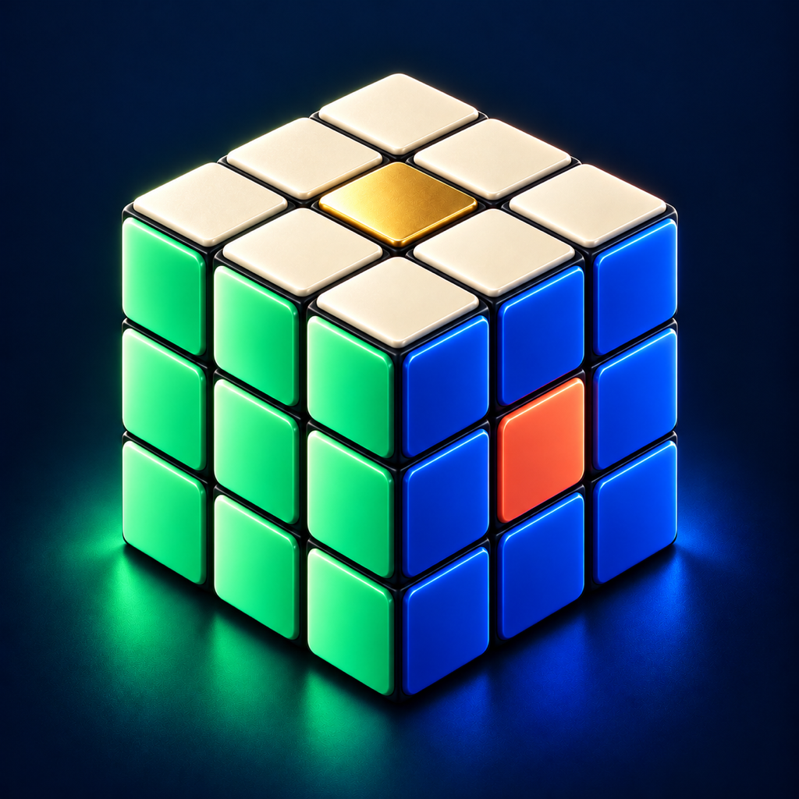

Choose. Capture. Review.
Select your puzzle in Settings, then use the main Solve screen. Capture or import each face, or enter colors manually. Orientation labels keep your reference consistent.

Solve³ by FreeRange LabsAvailable now for iPhone, iPad & Mac.
A scrambled cube doesn’t need to stay a mystery. Choose a 2×2 through 7×7 cube, Pyraminx or Skewb. Capture each face, check the colors, and follow an animated 3D guide at your own pace.
Available now on the App Store · $4.99 USD one-time purchase · Version 1.2.0

A simple rhythm
Every step gives you a chance to check, correct and continue.
Select your puzzle in Settings, then use the main Solve screen. Capture or import each face, or enter colors manually. Orientation labels keep your reference consistent.
Check every suggested sticker and confirm every face. The original 3×3 workflow includes center-color calibration; every puzzle has editable colors and matching face layouts.
Preview the moving layer, read the instruction, then advance after making the physical turn. Backtracking is always available.
Room to see the whole solve
A native desktop layout pairs the cube with its next instruction. Drag to inspect, preview a layer, and keep the sequence close.
Puzzle captures, progress and saved solutions stay on each device. Optional iCloud or folder sync covers timer results, training progress and cube profiles.


A little variation is normal
Different cube palettes and lighting can change how stickers look. Choose standard stickered, speed, GAN-style, white-body or smart-cube finishes. Photo-guided palettes and rounded pieces bring each model closer to the puzzle in your hands. Center calibration remains available for 3×3 captures.
Clear expectations. Better solves.
Available now for iPhone, iPad and Mac: solve 2×2–7×7 cubes, Pyraminx and Skewb alongside the original 3×3 workflow. One photo cannot reveal hidden stickers: capture and confirm every face. Glare and difficult lighting may need a correction or retake. Solutions are replay-verified. Large-cube reduction routes can be long and are not guaranteed shortest. Smart-cube Bluetooth tools are experimental; camera and manual 3×3 solving work independently. The virtual cube shows a predicted state; it is not an AR overlay anchored to your physical cube.
Contact FreeRange Labs